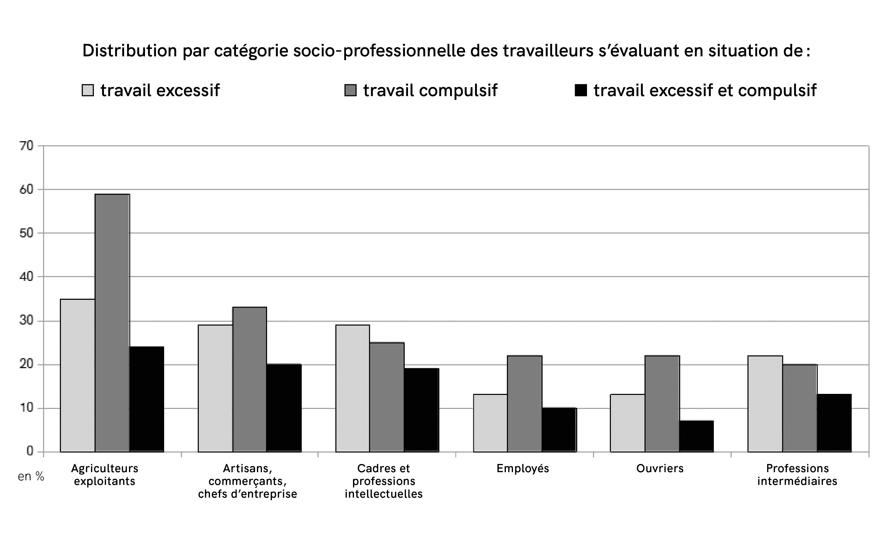

« Je suis en burn-outCette étude de cas repose sur l’encadrement d’une enquête réalisée en 2016 par un groupe d’étudiantes de Sciences Po : Laura Astier, Éléonore Cécillon, Claire Chopin, Eva Gossiaux et Julie Huguet. ». Cette expression, aujourd’hui couramment utilisée, relève cependant bien souvent de l’hyperbole : submergé·e·s par une tâche harassante, ou tout simplement confronté·e·s à une besogne pénible, nous l’employons parfois pour susciter la compassion, sans pour autant prétendre véritablement souffrir d’une pathologie psychique. Les premiers diagnostics de burn-out remontent déjà aux années 1970 et ont fait l’objet d’un certain nombre de travaux dans les domaines de la psychologie, de la médecine en général et du travail. Un grand flou entoure cependant la définition, la mesure ainsi que le statut de ce risque psychosocial (ou RPS), alors que ces éléments permettraient de le situer parmi les catégories qui régissent un ordre médical aussi bien que législatif.
Les diagnostics médicaux de burn-out ne sont, de manière générale, plus remis en question aujourd’hui.
Ce n’est pas l’existence d’un épuisement au travail qui fait controverse, mais sa reconnaissance. En quoi donner un nom à cette souffrance, la distinguer, la situer, lui conférer le statut de maladie, ou encore de maladie professionnelle, va-t-il modifier non seulement l’expérience et la prise en charge de celles et ceux qui en souffrent, mais aussi, plus globalement, les rapports sociaux et les équilibres en termes de santé, de justice et de libertés ?
Attentive à la manière dont les différentes forces en présence problématisent les enjeux disputés, l’étude de cette controverse laisse voir la richesse et la finesse des arguments débattus, loin d’une description caricaturale opposant celles et ceux qui sont pour ou contre le burn-out.
Parler du burn-out, pour en dire quoi ?
En tant que citoyen·ne·s, nous sommes imprégné·e·s de discours et d’images qui circulent dans l’espace public et façonnent notre perception d’une controverse. Nous abordons rarement un sujet disputé sans rien en connaître. Il est alors utile de s’intéresser à la manière dont les médias rendent compte de l’objet des dissensions et forgent la vague familiarité que nous entretenons avec lui. La première étape de l’enquête consiste à réaliser une revue de presse. De quoi parlent les journaux et autres sites d’informations quand ils évoquent le concept de burn-out ?
Un premier groupe d’articles met en avant une variété de publics concernés par le burn-out, tout en entretenant un flou sur le mal qui les touche précisément. C’est l’interrogation « burn-out ? » qui prévaut, que l’on parle de « la quasi-totalité d’une compagnie de CRS en arrêt maladie dans l’ouest de la France » ou que France 3 Bourgogne Franche-Comté qualifie « le mal-être des agriculteurs franc-comtois » par un ambivalent « entre burn-out et dépression ». Des célébrités souffrant d’intensités variables de ce mal sont souvent évoquées : tel champion du monde s’exprime sur l’émission « Canal Football Club » au sujet de son burn-out en disant avoir été « aigri » ; selon planet.fr, des « stars françaises » seraient « victimes d’un burn-out » en « s’épuisant physiquement et mentalement à cause de leur travail », entre « angoisse, stress ou pression » ; un ministre serait, selon Libération, « au bord du burn-out » après être apparu « avec une toute petite mine et une voix en cours d’extinction ». Dans le portrait que L’Équipe dresse d’une championne du monde de plongeon qui a mis un terme à sa carrière « pour cause de burn-out, après des années de souffrance », les mots pèsent davantage :
Je suis vidée, sans énergie. J’ai l’impression d’être dans une espèce de brouillard hyper épais en permanence. L’an dernier, je me rendais compte que je n’arrivais même pas à faire du calcul mental simple, quand on me rendait la monnaie par exemple. Je me rappelle avoir pensé : en fait, tu deviens bête, le sport t’a rendue bête. […] J’ai encore cette peur d’être comme ça pour toujours. Et ça, c’est assez effrayant.
Un second ensemble d’articles s’adresse directement aux lecteur·rice·s. Un test nous interpelle : « Êtes-vous proche du burn-out ? », alors qu’un énigmatique « Burn-out : Retrouvez l’équilibre travail/vie personnelle pour prévenir l’épuisement professionnel » semble nous offrir les clefs d’une prévention efficace. Les remèdes affluent également : l’article de Santé Magazine « Burn-out : pour l’éviter il faut se reposer 10h par jour » semble cohérent avec celui d’Ouest-France (du 1er avril 2019) qui relate comment « deux sœurs, l’une scientifique, l’autre musicienne, ont élaboré ensemble une méthode pour éviter d’être victime du syndrome d’épuisement professionnel, appelé aussi “burn-out”. Selon leurs recherches, se reposer 42 % du temps sur une journée permettrait de ne pas être submergé par l’anxiété et la fatigue ». Elles ont d’ailleurs publié un livre à ce sujet. L’Express emploi parle d’un « marché du burn-out » en présentant un nouveau complément alimentaire, et Femme actuelle le mag ose : « Le burn-out a changé ma vie… en mieux ! » Cette presse ne se contente pas de restituer la manière dont le burn-out frapperait certain·e·s acteur·rice·s, elle prétend participer à l’identification personnelle d’un problème public jusqu’ici invisibilisé, au sujet duquel chacun·e doit se demander s’il ou elle est concerné·e quand Top Santé titre : « Burn-out : il touche plus de 3 millions de Français ».
Le cas du burn-out montre à quel point des arènes médiatiques contribuent à cadrer un problème public. C’est pourquoi il est important de considérer les médias comme des acteurs d’une controverse, qui instruisent une manière de penser la question et n’agissent pas seulement comme des relais d’information. On peut rendre compte d’un emploi à la fois prolixe et flou du terme burn-out, utilisé quelle que soit la souffrance, quel que soit le travail. Pour des raisons d’ordre économique, les médias semblent rendre le burn-out moins stigmatisant que d’autres risques psychosociaux : le terme de burn-out, particulièrement présent dans les titres, joue le rôle d’attracteur de clics (générateurs de revenus via l’affichage de publicités), associé à des champs porteurs (la vie des « people » et des sportifs, le développement personnel). Ce cadrage fourre-tout de nombreuses souffrances s’explique donc par des enjeux propres à l’activité journalistique ; les médias prennent leur part du « marché du burn-out » qu’ils décrivent, en cherchant à y intéresser le plus de personnes possible.
Le burn-out est-il un nouveau mot, à la mode, qui traduit le besoin de mettre en lumière des maux hétérogènes auxquels serait confronté un nombre important de travailleur·se·s, sans pouvoir distinguer aigreur, mal-être, fatigue, épuisement, stress, anxiété, pression ou dépression – pour reprendre les termes rencontrés au cours de cette revue de presse ? Ou qualifie-t-il un trouble spécifique, potentiellement nouveau et grave, la sensation de vide et de brouillard liée à un surinvestissement dont témoigne la plongeuse interrogée par L’Équipe, un mal qui reste difficile à cerner ou à mesurer si l’on n’y est pas confronté·e ?
Pour résoudre cette ambivalence et comprendre tous les enjeux liés à la reconnaissance du burn-out comme maladie, d’autres sources d’enquêtes sont nécessaires : rapports d’expertise, propositions de lois, articles scientifiques issus de diverses disciplines médicales et des sciences sociales, communiqués de presse, auditions, entretiens, etc.
Reconnaître le burn-out, pour quoi faire ?
Identifier une souffrance comme maladie
Un rapport de l’Académie nationale de médecine, sobrement intitulé « Le burn-out » et paru en février 2016, distingue ce mal d’autres troublesJean-Pierre Olié et Patrick Légeron, « Le burn-out », Bulletin de l’Académie nationale de médecine, 200 (2), 2016, p. 349-365.. Il se penche sur ses symptômes et se réfère aux travaux centraux de Christina Maslach, chercheuse en psychologie sociale qui, en 1981, après avoir conduit des entretiens et des enquêtes par questionnaire avec des personnes émotionnellement éprouvées par le travail, a produit un outil de mesure à partir de l’analyse statistique des résultats : le Maslach Burnout Inventory. Ce questionnaire introspectif liste vingt-deux critères pour identifier le burn-out et évaluer sa sévérité, répartis en trois catégories distinctes : « épuisement émotionnel », « dépersonnalisation », « réduction de l’accomplissement personnel ».
Si l’Académie de médecine reconnaît dans son rapport la spécificité du burn-out en regard d’autres risques psychosociaux, elle insiste sur sa dimension « construite » : « La démarche pour définir l’entité burn-out est née d’un instrument de mesure, et non pas l’inverse comme c’est habituellement le cas. » Les auteurs soulignent que le Maslach Burnout Inventory ne permet pas, en outre, de poser un diagnostic. On y lit une critique de la dimension autoévaluative de ce questionnaire, dont le caractère normé est qualifié de « piège » : « Sans rapport avec la gravité clinique de la symptomatologie, l’interprétation des résultats […] est donc impossible en termes épidémiologiques. »
Soulignons que le dispositif de diagnostic par questionnaire (une méthodologie propre aux sciences sociales et fréquemment employée en psychologie) est considéré avec circonspection par les médecins. Interrogé en juillet 2016 par la mission d’information relative au syndrome d’épuisement professionnel de la Commission des affaires sociales de l’Assemblée nationale, le psychiatre Patrick Légeron, coauteur du rapport de l’Académie de médecine, évoque ainsi un problème de « frontière entre ce qu’on peut appeler la détresse psychologique et la pathologie ». Il critique l’amalgame entre des « manifestations intra-cliniques » qui ne doivent pas être ignorées, mais qu’il faut cependant bien distinguer des « manifestations franchement pathologiques », de la même manière que l’on ne peut pas assimiler toute tristesse à de la dépression. Il précise que l’« on a noyé [ces deux types de manifestation], avec une espèce d’extension qui ne sert pas les vrais patientsÀ travers l’emploi de cette expression, que nous soulignons, on peut lire le travail de délimitation que le psychiatre opère non plus seulement entre des manifestations physiologiques distinctes, mais aussi entre deux groupes distincts d’individus en souffrance., dans le concept qu’on appelle le burn-out ».
On retrouve ici la tension entre une définition large et englobante du burn-out, un nouveau mot pour qualifier un éventail de souffrances liées au travail, réelles mais diverses, et la mise au jour d’une pathologie induite par l’exercice professionnel, de nouveaux maux qui mériteraient une reconnaissance spécifique, mais dont la délimitation pose problème. Les recherches de quantification traduisent ce flou définitionnel. Pour l’Institut de veille sanitaireImane Khireddine, Audrey Lemaître, Julie Homère, Julie Plaine, Loïc Garras, Marie-Christine Riol, Madeleine Valenty et le Groupe MCP 2012, « La souffrance psychique en lien avec le travail chez les salariés actifs en France entre 2007 et 2012, à partir du programme MCP », Bulletin épidémiologique hebdomadaire, 23, 2015, p. 431-438., en 2015 en France, « 7 % des 480 000 salariés en souffrance psychologique liée au travail » seraient en burn-out, soit 30 000 individus. Un bureau d’études, Technologia, a quant à lui publié en janvier 2014 une Étude clinique et organisationnelle permettant de définir et de quantifier ce qu’on appelle communément le burn-out. Cette tentative de conjointement mesurer et définir le burn-out (fondée sur une dizaine d’entretiens semi-directifs et un questionnaire renseigné par un échantillon représentatif de la population française de 1 000 personnes) conclut au chiffre abondamment repris de 3,2 millions d’actifs « en risque élevé de burn-out ».
Notons bien qu’un·e Français·e sur vingt (plus de 12 % de la population active) est considéré·e en risque élevé et non en burn-out, contrairement au titre du magazine Top Santé cité précédemment et qui, sur la base de cette étude, faisait ce raccourci fallacieux. Le choix normatif opéré par Technologia de définir un risque de burn-out (en tant que situation de travail autodiagnostiquée comme à la fois excessive et compulsive) et de quantifier une potentialité traduit une volonté de faire émerger un problème en le liant à des publics susceptibles d’être concernés.
Pour l’Académie nationale de médecineJean-Pierre Olié et Patrick Légeron, « Le burn-out », art. cité., « les données épidémiologiques sur le burn-out sont à ce jour très insuffisantes ». Elle affirme que « la symptomatologie existe, mais [qu’]elle ne peut pas encore être constituée sur une entité médicale ». En l’absence de marqueurs biologiques pour poser un diagnostic, l’épuisement professionnel n’est donc toujours pas reconnu comme une maladie. Cela rejoint d’ailleurs l’avis de l’Organisation mondiale de la santé (OMS), malgré un imbroglio qui s’est produit en 2019 : de nombreux médias annoncent que l’OMS reconnaît le burn-out en tant que maladie, alors que dans sa nouvelle version de la Classification internationale des maladies (CIM-11), l’organisation le définit toujours comme un syndrome : « Le burn-out, ou épuisement professionnel, est un syndrome conceptualisé comme résultant d’un stress chronique au travail qui n’a pas été correctement géré ». L’OMS explicitera sur son site web : « Le burn-out, ou épuisement professionnel, est considéré comme un phénomène lié au travail. Il n’est pasSurligné en gras par l’OMS. classé parmi les maladies ».
Si, pour le psychiatre Patrick Légeron, « on ne peut pas se laisser embarquer par des concepts qui vont et qui viennent (suicide, harcèlement, burn-out), qui ont une réalité sociale que je ne nie pas, mais qui […] sont des obstacles à agir sérieusement », les collectifs réunissant celles et ceux qui en souffrent soulignent la nécessité de requalifier le burn-out comme maladie, une de leurs revendications principales. Dans une lettre à la ministre de la Santé datée de février 2015, la présidente de l’Association d’aide aux victimes du burn-out France Burn Out (AFBO), Léa Riposa, demande cette reconnaissance « en tant qu’ancienne malade, […] puisque cette pathologie, bien réelle pour les patients, n’existe pas officiellement ». Elle qualifie d’« errance » le flou définitionnel qui, selon elle, nuit au diagnostic, à la prise en charge des personnes en souffrance et induirait une stigmatisation des malades. L’AFBO n’exige cependant pas cette classification sans fondement scientifique ou médical : elle sollicite le financement d’un programme de recherche « relatif au diagnostic de ce syndrome, puisqu’un sérieux espoir de dépistage est désormais possible » et, « une fois la maladie reconnue », préconise un travail législatif.
Un premier axe de controverse se focalise sur la définition du concept, la mesure du phénomène et sa classification dans une typologie préexistante. Ces problèmes de
catégorisations, classiques des controverses, mettent aux prises le monde médical et leurs patient·e·s à propos d’un trouble mal ou non diagnostiqué – on peut citer pour exemple les débats sur la reconnaissance de la fibromyalgie comme maladieVoir par exemple : Alexandra Nacu et Daniel Benamouzig, « La fibromyalgie: du problème public à l’expérience des patients », Santé publique, 22 (5), 2010, p. 551-562.. De telles oppositions sont souvent le reflet de rapports de force genrés.
Dans cette arène où est discutée la définition du burn-out, les voix scientifiques pèsent particulièrement. Cela n’empêche pas le dialogue ni la nuance. Ainsi, tou·te·s les acteur·rice·s reconnaissent et déplorent un flou définitionnel ; ni la réalité des souffrances, ni la nécessité d’une expertise scientifique ne sont niées ; et tou·te·s s’expriment sur un état des connaissances actuel, qui pourrait et devrait évoluer.
Réparer des maux causés par le travail
Le terme anglais de burn-out est officiellement traduit par « syndrome d’épuisement professionnel », mais il est fréquent de voir les deux expressions employées côte à côte dans les textes de langue française. Le terme français, qui permet d’éviter l’anglicisme, pose en effet question : il entérine le statut de syndrome, affaiblit l’image sémantique, présente dans l’anglais, du feu qui annihile (que l’on retrouve en français dans le langage familier à travers l’usage figuré du verbe « cramerUne simple requête « burn-out » dans un moteur de recherche d’images va renvoyer à des illustrations d’allumettes brûlées, voire d’humains immolés. ») pour en faire une grande fatigue et situe l’origine du mal subi dans le seul monde du travail.
C’est à propos de cette attribution strictement professionnelle de la maladie, de sa prise en charge et des coûts qui y sont liés que se dessine un deuxième ensemble de controverses.
En France, au cours des dernières années, les discussions concernant le burn-out se sont polarisées sur sa reconnaissance comme maladie professionnelle. À cet énoncé, on pourrait croire le problème similaire à celui déjà décrypté : le burn-out n’est pas reconnu comme maladie mais en tant que syndrome, et ce statut est disputé ; son lien avec le monde du travail est en revanche évident. Le sujet ne relève en réalité plus tout à fait du domaine médical : une maladie professionnelle n’est pas une pathologie dont l’origine est laborieuse, mais une disposition juridique répondant à l’article L. 461 du Code de la sécurité sociale. Elle s’inscrit dans un cadre légal qui réglemente la prise en charge, à la fois en termes de parcours de soins et financièrement, des salarié·e·s subissant une dégradation de leur état de santé liée au travail.
En soi, comme le soulignent les adversaires d’une reconnaissance, le statut de maladie pourrait constituer une condition sine qua non à l’inscription au tableau des maladies professionnelles. D’un côté, l’Association nationale des directeurs des ressources humaines (ANDRH), dans un communiqué de presse, « considère qu’il est inopportun de légiférer » dans le sens d’une reconnaissance, ce que d’un autre côté, Jean-Claude Delgènes, directeur général du cabinet Technologia, dénonce dans le journal L’Humanité : « On bute sur [la non-reconnaissance] en tant que maladie. […] Une position conservatrice est donc d’expliquer qu’il n’est pas possible d’aller vers la création de nouveaux tableaux de maladies professionnelles ». Selon lui, cette position conservatrice inverse le lien de causalité entre la production des savoirs et la mise en place d’un outil légal : « La reconnaissance du caractère professionnel de la pathologie permettrait de clarifier les outils de statistiques et de connaissanceNicolas Dutent, « Faut-il reconnaître le burn-out comme maladie professionnelle ? », L’Humanité, 16 février 2018. ».
Promesse de campagne du candidat socialiste Benoît Hamon (conseillé par Technologia), la reconnaissance du burn-out comme maladie professionnelle a été publiquement débattue pendant les élections présidentielles de 2017 avant d’être à nouveau discutée en 2018 à la suite d’une proposition de loi du député François Ruffin (La France insoumise) visant le même objectif.
Pour celles et ceux qui souhaitent un statut légal du burn-out, les enjeux sont de deux ordres. Il s’agit tout d’abord de faciliter la prise en charge de la personne en souffrance : actuellement, la reconnaissance d’un burn-out comme pathologie causée par le travail n’est pas automatique. En l’absence d’inscription au tableau des maladies professionnelles, chacun·e doit plaider son cas « hors tableau » ou « par la voie complémentaire » auprès de Comités régionaux de reconnaissance des maladies professionnelles (CRRMP), qui statuent sur le lien de causalité entre les souffrances du ou de la plaignante et son travail. Certain·e·s dénoncent des procédures longues, voire dissuasives, puisque deux à trois cents cas seulement sont reconnus chaque année en France. Le directeur de Technologia évoque le « rôle très malthusien » de ces commissions « qui aggravent le mal ».
Les victimes se heurtent notamment à la grande difficulté de prouver un taux d’incapacité permanente partielle (IPP) d’au moins 25 % quand leurs maux psychiques ne se traduisent pas forcément en termes physiologiques. En prenant comme modèle la législation suédoise, le programme de Benoît Hamon et la proposition de loi de François Ruffin prévoyaient d’abaisser ce taux d’IPP à 0 % et d’aligner les indemnités sur celles des accidents du travail – un·e salarié·e inapte pour cause de burn-out ne bénéficiant aujourd’hui que du chômage.
Le 15 février 2017, la Commission des affaires sociales de l’Assemblée nationale présente un rapport en conclusion des travaux de la mission d’information relative au syndrome d’épuisement professionnel (ou burn-out). Le rapport souligne qu’« en l’état de la science médicale, il n’est actuellement pas possible d’élaborer un tableau qui permettrait de prendre en charge l’épuisement professionnel dans les conditions de droit commun ». L’élaboration de ce tableau est toutefois qualifiée d’« objectif » dont les « obstacles » à sa mise en place devraient être « progressivement levés ».
Si les partisans de la reconnaissance légale du burn-out cherchent avant tout à ce que les personnes en souffrance soient mieux accompagnées, c’est bien sûr à la « présomption d’imputabilité » du burn-out à une organisation du travail, induite par l’inscription au tableau des maladies professionnelles, que les oppositions sont les plus fortes dans l’espace public et politique. Il s’agit d’une question de responsabilité non seulement morale, juridique, mais aussi pécuniaire : qui, dans notre société, doit prendre en charge la réparation du mal causé par le travail ?
« L’employeur prend les mesures nécessaires pour assurer la sécurité et protéger la santé physique et mentale des travailleurs » : pour celles et ceux qui souhaitent donner un statut légal au burn-out, l’article L. 4121-1 du code du travail implique une responsabilité directe et automatique de l’employeur·se. Ils et elles réclament que la prise en charge des salarié·e·s concerné·e·s ne soit plus assurée collectivement par la branche maladie de la Sécurité sociale, mais par la branche « accident du travail-maladie professionnelle » centralisée par la Caisse nationale de l’assurance maladie, qui rembourse en totalité les frais médicaux engagés et qui est financée à 97 % par des cotisations spécifiques des employeur·se·s. Les instances patronales s’y opposent fermement.
Ce n’est plus la nature du trouble qui est remise en question, mais son origine qui est disputée. Pour l’ANDRH par exemple, faire porter la responsabilité de l’épuisement professionnel sur les seules organisations reviendrait « à nier la multiplicité de ses facteurs (profession exercée, soutien hors travail, individu lui-même) » et nuirait en conséquence à l’efficacité des politiques de santé. François Rebsamen, ministre du Travail des gouvernements Valls I et II, indiquait lui aussi que le burn-out n’est « pas uniquement lié au poste de travail » et refusait une reconnaissance systématique, car « des fois, il y a une cause personnelle ». Sa successeure dans le gouvernement Philippe, Muriel Pénicaud, tenait la même ligne au micro de France Inter en mai 2019 :
Il y a un cumul avec la vie personnelle : quand on arrive au désespoir, il n’y a plus rien pour vous raccrocher. La définition n’est pas médicalement prouvée. De toute façon, on est obligé de suivre l’OMS. Mais ça ne veut pas dire qu’il ne faut pas agir.
Les syndicalistes Jean-Paul Vouiller et Philippe Boutrel, représentant la Confédération française des travailleurs chrétiens (CFTC) chez Hewlett-Packard, expliquentEntretien réalisé le 25 mars 2017 par Claire Chopin, Eva Gossiaux et Julie Huguet. avoir investi ces questions à la suite d’un suicide dans leur équipe, alors que personne, y compris les délégué·e·s du personnel, n’avait détecté une « telle » souffrance. Incités à témoigner publiquement de ce drame par une médecin du travail, ils se sont ensuite formés à la méthode dite « des délégués sociaux » mise en place au Québec pour pouvoir identifier et accompagner les salarié·e·s en souffrance, notamment en burn-out. Forts de leur expérience, ils soulignent combien leur rôle ne peut s’arrêter au seul univers du droit du travail et que la perméabilité des problèmes personnels avec le cadre professionnel est évidente. Pour autant, ils estiment que le burn-out a une origine professionnelle, même si le facteur déclenchant une crise chez une personne « qui craque » peut être une charge familiale – l’Alzheimer d’un parent par exemple – qui viendrait s’ajouter à la perte de repères et à la contraction des temporalités au travail.
Le sociologue Marc Loriol suggère que « la reconnaissance n’est pas le premier combat à mener ». S’il souhaite que les difficultés des salarié·e·s soient traitées sous le registre du burn-out plutôt que celui de la dépression, il déplore que les prises de position se focalisent sur les effets individuels du burn-out :
Au risque d’une part de culpabiliser la victime qui n’aurait pas réussi à trouver le « bon » équilibre entre engagement et préservation de soi, et d’autre part de ne pas pouvoir comprendre pourquoi, d’une situation de travail à l’autre, un métier très prenant peut conduire soit à l’épanouissement professionnel […], soit à l’épuisement et au rejet du travailMarc Loriol, « Un burn-out n’est ni un épuisement, ni une dépression : sa prise en charge est spécifique », Le Plus de l’Obs, 23 février 2016..
C’est donc du côté « de la mise au jour des facteurs organisationnels » qu’il faudrait, pour lui comme pour d’autres acteur·rice·s de la controverse, penser le burn-out. Si « la nature organisationnelle et sociale du burn-out fait qu’il entre mal dans le cadre juridique », ce sont précisément ces aspects structurels qu’il convient d’interroger en vue d’une prévention réussie.
Prévenir des vices structurels pathogènes
La question des responsabilités et de la réparation, qui révèle une dichotomie simple à partir d’un problème complexe, trouve ses racines dans des débats plus profonds sur les modes d’organisation du travail et ses transformations. Si l’on dépasse la contingence des cas individuels pour penser et œuvrer à la prévention de ce risque psychosocial à l’échelle d’une société, comment expliquer l’émergence des burn-out ? Et s’il est difficile de parler de leur multiplication en l’absence de quantification stabilisée, comment interpréter la mise à l’agenda régulière du débat sur leur reconnaissance ?
Pour certain·e·s, c’est tout l’univers de l’entreprise qui est devenu pathogène, dans ses rouages les plus structurels liés au capitalisme, alors que d’autres identifient plus précisément des dérives néfastes susceptibles d’être corrigées sans une remise en question systémique jugée « idéologique ». Ces dernier·e·s privilégient alors une politique de santé publique fondée sur la prévention au niveau des individus. Ainsi, pour illustrer de nouvelles tendances problématiques propres à l’univers entrepreneurial, Bénédicte Le Deley, la secrétaire générale de l’ANDRH, évoque la difficile gestion de la fatigue par de jeunes consultant·e·s fraîchement diplômé·e·s qui « bossent à fond, partent en vacances et là, ne dorment pas, font la fête, puis reviennent au boulot, et trois semaines après, sont explosésEntretien réalisé en juin 2019 par les participant·e·s à un atelier de sociologie populaire des controverses proposé par Forccast à la Gaîté Lyrique. ». Appelant à s’intéresser à la notion d’hygiène de vie sur un modèle canadien, elle souligne les interdépendances entre vie personnelle et professionnelle, et situe là des moyens d’action pour éviter les burn-out.
Bénédicte Le Deley ne place cependant pas l’origine des maux du seul côté des salarié·e·s. Reconnaissant le rôle parfois néfaste de l’encadrement hiérarchique et l’éclatement des activités, donc la difficulté d’assurer un suivi pour certaines fonctions (chef·fe de projet par exemple), elle incite à mieux former les managers à l’identification et à l’accompagnement des travailleur·se·s en souffrance. La figure du manager est d’ailleurs citée aussi bien du côté de celles et ceux qui subissent des burn-out que de celles et ceux qui devraient mieux protéger leurs équipes contre ce risque psychosocial, sous peine d’en être désigné·e·s responsables.
Ce besoin de formation managériale a produit une offre. Ainsi, pour 1 415 € HT dans leurs locaux ou 3 550 € HT en entreprise, le cabinet de formation professionnelle et continue Cegos propose à un groupe de DRH et de managers une formation de quatorze heures pour « faire face au risque de burn-out des collaborateurs : repérer les signes du syndrome d’épuisement professionnel ». L’humoriste Nicole Ferroni, en février 2014 sur France Inter, stigmatise les entreprises « spécialisées dans la vente de rustines psychologiques » pour lesquelles « finalement, le suicide, c’est un peu un moteur économique » : « Certes, Monique, votre mise au placard vous plonge en dépression, mais regardez donc ce petit film institutionnel de 4 min 33 sur la prévention du suicide et vous verrez, le suicide c’est dangereux pour la santé ».
Selon l’European Trade Union Institute, la prévention constitue un cadre conceptuel privilégié par la France, contrairement à d’autres pays tels que la Belgique, l’Allemagne ou la Bulgarie qui interrogent davantage l’origine professionnelle. Des acteur·rice·s nationa·ux·les proposent cependant de penser la prévention non pas seulement comme une politique d’information et d’anticipation à l’échelle de l’individu, mais comme une dynamique active de résistance aux effets néfastes du monde de l’entreprise.
Pour 350 € HT par stagiaire, le cabinet Technologia propose, lui aussi, une formation intitulée « Prévenir le burn-out ou l’épuisement professionnel ». Il s’adresse toutefois à un public distinct, à savoir « toute personne concernée par ce thème ou désireuse de le découvrir, représentant du personnel, responsable syndical », qu’il vise à équiper dans le dialogue et la négociation patronale. En 2016, dans une lettre ouverte adressée au président de la Fédération, des intervenant·e·s des risques psychosociaux, une vingtaine de médecins du travail dénonçaient la publication par la Fédération d’un guide « qui se contente d’outiller les entreprises pour prévenir le risque de burn-out ». Pour le porteur de l’initiative, le docteur Bernard Morat, le combat pour sa reconnaissance comme maladie professionnelle est la condition sine qua non d’une politique de prévention qui ne soit pas de façade : « Je ne connais que trois moyens de faire bouger les entreprises en matière de prévention : la loi […], la responsabilité pénale […] [et] le portefeuille. »
Si le burn-out, comme d’autres risques psychosociaux, est un signe que des activités professionnelles peuvent, dans certains contextes, se révéler pathogènes, est-ce le cas pour tout travail en général ? Et si oui, l’émergence du terme de burn-out depuis les années 1970 traduit-elle un progrès médical lié à l’identification de troubles préexistants sans nom, ou correspond-elle à l’irruption d’un mal inédit, dû aux nouvelles formes du capitalisme et du management ?
Dans son ouvrage Entre l’enclume et le marteau : les cadres pris au piège, le professeur de gestion et de théorie des organisations Jean-Philippe Bouilloud décrit un phénomène récent : les cadres d’aujourd’hui subiraient de plus en plus les effets néfastes des transformations de l’entreprise qu’elles et ils ont aidé à mettre en place. Il identifie une dissonance cognitive par rapport à un système auquel beaucoup de managers adhèrent sur le plan des valeurs, dont ils et elles se font même « les instruments zélés », mais qui engendre de nombreuses souffrances au travail auxquelles elles et ils n’échappent plus.
Pour le professeur titulaire de la chaire Psychanalyse- santé-travail au CNAM Christophe Dejours, interrogé par la Commission des affaires sociales de l’Assemblée nationale en 2016, il s’agit d’une question plus ancienne, apparue avec le capitalisme du XIXe siècle. Comment ne pas qualifier des journées de travail qui durent alors jusqu’à seize heures, y compris pour des enfants, comme épuisantes professionnellement ? La réduction du temps de travail apparaît au XXe siècle, poursuit le chercheur, comme une façon de traiter la question de l’épuisement professionnel. Il souligne qu’il est paradoxal de voir cette question resurgir aujourd’hui, alors que le temps travaillé a baissé considérablement ; il incrimine une gouvernance par les nombres, le rôle néfaste d’outils numériques qui rendent perméables les temps de travail et de repos, et surtout une grande perte de sens de l’activité, si elle n’est pas socialement reconnue.
Dans cette controverse portant sur l’ampleur et l’origine d’une résurgence des risques psychosociaux, le burn-out tient une place singulière car ne se superposant pas avec une autre notion-clef : celle de pénibilité. Cette dernière est principalement associée aux professions et catégories socioprofessionnelles les moins rémunérées, employé·e·s et ouvrier·e·s, soumis·es à des tâches répétitives et physiquement éprouvantes pour les corps. De nouvelles souffrances au travail, qui ne se traduisent pas toujours physiologiquement, ont été reconnues, comme le harcèlement moral. Elles concernent toute la chaîne hiérarchique et des métiers très divers. Le burn-out, en revanche, est-il une maladie de cadres ?
À lire certains des témoignages, on pourrait le croire. Le burn-out est souvent lié à un surengagement : en comparaison avec d’autres risques psychosociaux, ses victimes font souvent partie des personnels les mieux perçus et évalués en entreprise. D’où, sans doute, une attention particulière des directions et des ressources humaines à sa prévention, et un stigmate social moindre que celui associé, par exemple, à la dépression. Cela peut aussi expliquer pourquoi les médias ont plus de succès avec le thème du burn-out qu’avec d’autres souffrances au travail et que des sportif·ve·s ou des célébrités surinvesties dans une course à la performance y soient associé·e·s.
Qu’en est-il réellement ? L’absence de statistiques fiables complique l’analyse. L’étude menée par le cabinet Technologia au sujet de l’épuisement professionnel interroge les dimensions « excessive » et « compulsive » du travail du ou de la répondante par catégorie socioprofessionnelle.
Ses résultats sont présentés dans le graphique qui suit : les personnes en risque élevé de burn-out, c’est-à-dire celles et ceux qui décrivent leur travail comme à la fois excessif et compulsif, sont dans une moindre mesure des employé·e·s, des ouvrier·e·s et des professions intermédiaires que des cadres et des chef·fe·s d’entreprise. Mais artisan·e·s, agriculteur·rice·s exploitant·e·s et travailleur·se·s indépendant·e·s semblent encore plus vulnérables, alors même que peu d’entre elles et eux se font les porte-paroles de leurs souffrances, moins visibles et unies que celles mises au jour par des collectifs professionnels.

Étude clinique et organisationnelle permettant de définir et de quantifier ce qu’on appelle communément le burn-out, Cabinet Technologia, 2014.
Dans un article intitulé « La construction sociale du stress : entre objectivation, subjectivité et régulations collectives des difficultés au travail » et publié dans la Nouvelle revue de psychosociologie en 2010, le sociologue Marc Loriol constate que « le vocable du stress (ou d’autres entités comme le burn-out) n’[est] pas compris et utilisé de la même façon suivant les lieux, les époques ou les métiers » et invite à aborder ces notions comme des constructions sociales. Il précise que l’attention portée aux conditions d’émergence du concept ne constitue aucunement une atteinte portée à la réalité des maux.
Cette approche constructiviste révèle toutefois la manière dont des entrepreneur·e·s de cause ont revendiqué l’usage de certains mots pour mieux faire valoir la singularité de leur situation professionnelle et l’acuité des problèmes auxquels elles et ils étaient spécifiquement confronté·e·s. Ainsi, pour Marc LoriolMarc Loriol, « La construction sociale de la fatigue au travail. L’exemple du burn-out des infirmières hospitalières », Travail et Emploi, DARES, 2003, p. 65-74., « les catégories de stress et de burn-out ont été popularisées auprès des infirmiers par l’action des écoles de formation et de certains cadres hospitaliers qui y voyaient une occasion de mieux outiller les soignants pour gérer les difficiles relations avec les patients ». Il explique comment un syndicat, la CFE-CGC, a depuis les années 1990 porté le thème du stress des cadres « en réponse au sentiment de dégradation relative de [leur] situation ».
Si l’on ne peut pas dire que le burn-out est une maladie propre à l’univers médical ou aux cadres, l’émergence du concept a de fait été portée par des professions qui cherchaient à faire reconnaître la spécificité des difficultés et souffrances inhérentes à leur activité.
La reconnaissance au cœur du travail
L’impossibilité de qualifier le burn-out comme maladie plutôt que comme syndrome constitue-t-elle un fait scientifique, ou traduit-elle une situation d’incertitude dont aucune conclusion ne peut, en l’état des connaissances, être encore tirée ? Dans la seconde de ces hypothèses, il est possible d’assumer des actions législatives et réglementaires en l’absence de convergence des expert·e·s quant à la nature et à la définition du problème qui se pose.
Les prises de position sur la reconnaissance du burn-out, notamment comme maladie professionnelle, sont tellement liées à des épistémologies antagonistes quant à la place qu’occupe le travail dans la vie d’un être humain, à sa nécessité et à son sens, qu’elles sont évidemment peu conciliables. Ce n’est d’ailleurs pas le but de l’analyse de controverses. Le déploiement des arguments, la description des acteur·rice·s, leurs arguments et leurs débats montrent que ce qui est en jeu ici est intrinsèquement interactionnel : en quoi le regard et la considération qu’une société porte sur le burn-out et son officialisation dans des typologies scientifiques et légales modifient-ils l’expérience individuelle tout autant que les rapports (humains, mais aussi de pouvoir) qui se tissent au travail ?
Dans cette controverse, tout est question de reconnaissance, mais celle du burn-out en tant que maladie professionnelle ne constitue pas tant une fin en soi qu’un moyen d’interroger un manque de reconnaissance au travail lié à une perte de sens de l’activitéOn pense aux « bullshit jobs » décrits par David Graeber dans Bullshit Jobs : A Theory (2018)., ou au contraire, pour certain·e·s qui ne vivraient que par leur surinvestissement professionnel, l’univocité d’une reconnaissance en tant qu’individu à travers le prisme du travail. Comme l’a montré Marc Loriol, le burn-out a également une dimension performative : c’est précisément en portant des discours et en nommant des maux sous ce concept unifié, en se battant pour son statut, que certaines professions ont trouvé un moyen d’action qui concourt à la reconnaissance de la valeur et des maux spécifiques à leur travail.
Thomas Tari
Pour aller plus loin
BOWKER Geoffrey C. et STAR Susan Leigh, Sorting Things Out : Classification and Its Consequences, Cambridge (Mass.), MIT Press, 1999.
Dans cet ouvrage riche d’une multiplicité d’études de cas concernant la classification internationale des maladies et des manières de mourir, les critères raciaux sous l’apartheid, ou encore les trajectoires de patient·e·s qualifié·e·s de tuberculeux·ses, les sociologues Geoffrey Bowker et Susan Leigh Star s’attachent à décrire des dispositifs de catégorisation et leurs conséquences. Les auteur·rice·s mettent au jour une méthode d’« inversion infrastructurelle » qui consiste à lire les dimensions politique, sociale et psychologique des typologies à partir des pratiques de catégorisation, dans toute leur matérialité, et non à partir des seuls principes classificatoires.
GRAEBER David, Bullshit Jobs, Paris, Les Liens qui libèrent, 2019.
L’anthropologue américain David Graeber propose dans ce livre magistral une analyse poussée du phénomène des « jobs à la con ». À l’image des coordinateur·rice·s en communication, des chercheur·se·s en relations publiques ou des avocat·e·s d’affaires, ces jobs de managers intermédiaires prolifèrent. Souvent très bien rémunérés, ils sont pourtant inutiles à la société. À l’inverse, les métiers nécessaires comme éboueur·se·s ou infirmier·e·s sont fréquemment méprisés et sous-payés. Comment expliquer ce paradoxe ? Pour l’auteur, il s’agit d’un effet du capitalisme avancé qui fait gonfler l’importance des secteurs administratifs, dans le
public comme le privé. Il montre comment le 1 % de la population la plus riche contrôle, à travers la définition des tâches « utiles » et « importantes », tou·te·s celles et ceux imbriqué·e·s dans une « civilisation fondée sur le travail devenu sens en soi ». Il en analyse les conséquences individuelles et sociétales : anxiété, dépression, effondrement de l’estime de soi. Pour lui, l’introduction d’un revenu universel de base permettrait de sortir de cette impasse destructrice en réorganisant nos valeurs.